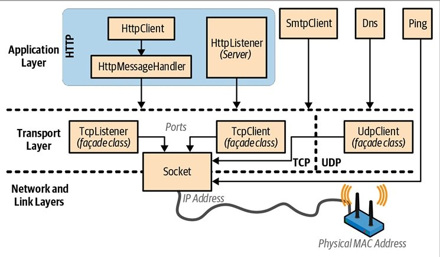
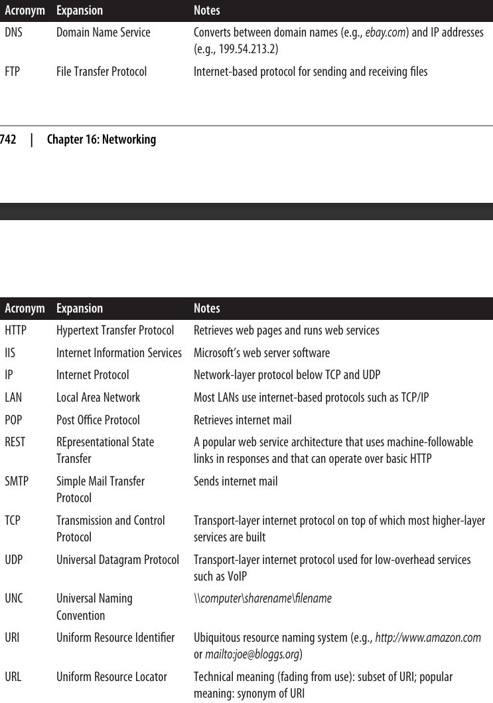
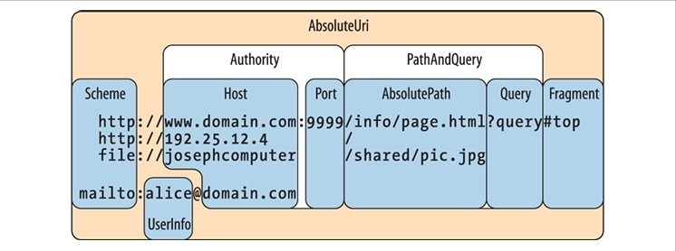
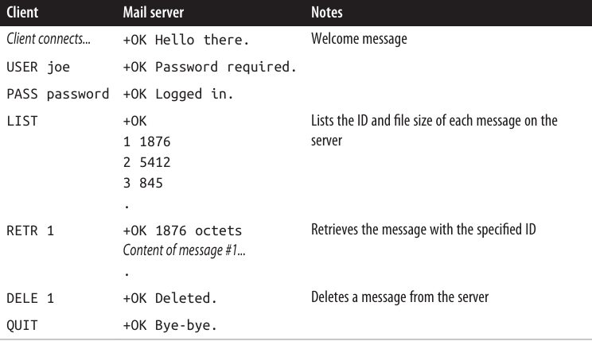

فصل شانزدهم: شبکهسازی
.NET مجموعهای از کلاسها را در فضای نام System.Net.* برای برقراری ارتباط از طریق پروتکلهای استاندارد شبکه مثل HTTP و TCP/IP ارائه میدهد. در اینجا خلاصهای از اجزای کلیدی آورده شده است:
- HttpClient برای مصرف APIهای وب مبتنی بر HTTP و سرویسهای RESTful
- HttpListener برای نوشتن یک سرور HTTP
- SmtpClient برای ساخت و ارسال پیامهای ایمیل از طریق SMTP
- Dns برای تبدیل بین نام دامنه و آدرسها
- کلاسهای TcpClient، UdpClient، TcpListener و Socket برای دسترسی مستقیم به لایههای انتقال و شبکه
انواع (Types) موجود در این فصل از .NET در فضای نامهای System.Net.* و System.IO قرار دارند.
.NET همچنین پشتیبانی سمت کلاینت از FTP را فراهم میکند، اما فقط از طریق کلاسهایی که از نسخهی .NET 6 بهبعد بهعنوان obsolete (منسوخ) علامتگذاری شدهاند. اگر لازم باشد از FTP استفاده کنید، بهترین گزینه استفاده از یک کتابخانهی NuGet مثل FluentFTP است.
معماری شبکه
شکل ۱۶-۱ انواع شبکهای .NET و لایههای ارتباطی که در آنها قرار دارند را نشان میدهد. بیشتر انواع در لایهی انتقال (Transport layer) یا لایهی کاربرد (Application layer) قرار دارند.
لایهی انتقال پروتکلهای پایهای برای ارسال و دریافت بایتها را تعریف میکند (TCP و UDP).
لایهی کاربرد پروتکلهای سطح بالاتر را تعریف میکند که برای برنامههای خاص طراحی شدهاند، مثل:
- بازیابی صفحات وب (HTTP)
- ارسال ایمیل (SMTP)
- تبدیل بین نام دامنه و آدرسهای IP (DNS)

معمولاً برنامهنویسی در لایهی کاربرد (Application layer) راحتتر است؛ بااینحال، دلایلی وجود دارد که ممکن است بخواهید مستقیماً در لایهی انتقال (Transport layer) کار کنید.
- یکی از دلایل این است که به یک پروتکل کاربردی نیاز داشته باشید که در .NET ارائه نشده است، مثل POP3 برای دریافت ایمیل.
- دلیل دیگر این است که بخواهید یک پروتکل سفارشی برای یک برنامهی خاص طراحی کنید، مثل یک کلاینت همتا به همتا (peer-to-peer client).
پروتکل HTTP و اهمیت آن
در بین پروتکلهای کاربردی، HTTP به دلیل کاربرد عمومیاش اهمیت ویژهای دارد. حالت پایهای عملکرد آن—«این صفحهی وب با این URL را به من بده»—بهخوبی با الگوهای دیگر مثل «نتیجهی فراخوانی این endpoint با این آرگومانها را به من بده» سازگار میشود.
علاوه بر فعل get، افعال دیگری مثل put، post و delete هم وجود دارند که امکان ساخت سرویسهای مبتنی بر REST را فراهم میکنند.
HTTP همچنین مجموعهی گستردهای از قابلیتها دارد که در برنامههای تجاری چندلایه و معماریهای سرویسمحور مفید هستند، مثل:
- پروتکلها برای احراز هویت (authentication) و رمزنگاری (encryption)
- قطعهبندی پیامها (message chunking)
- هدرها و کوکیهای قابلگسترش (extensible headers and cookies)
- امکان اینکه چندین برنامهی سرور یک پورت و یک آدرس IP مشترک داشته باشند
به همین دلایل، HTTP در .NET بهخوبی پشتیبانی میشود—هم بهصورت مستقیم (همانطور که در این فصل توضیح داده میشود) و هم در سطوح بالاتر، از طریق فناوریهایی مثل Web API و ASP.NET Core.
همانطور که از بحثهای بالا مشخص است، حوزهی شبکهسازی پر از اختصارنویسیها (acronyms) است. متداولترین آنها در جدول ۱۶-۱ فهرست شدهاند.

آدرسها و پورتها
برای اینکه ارتباط برقرار شود، یک کامپیوتر یا دستگاه نیاز به یک آدرس دارد. اینترنت از دو سیستم آدرسدهی استفاده میکند:
IPv4
در حال حاضر سیستم غالب آدرسدهی است. آدرسهای IPv4 دارای عرض ۳۲ بیت هستند. وقتی بهصورت رشته (string) قالببندی میشوند، به شکل چهار عدد اعشاری با جداکنندهی نقطه نوشته میشوند (برای مثال:101.102.103.104). یک آدرس میتواند در کل دنیا منحصربهفرد باشد یا فقط در یک زیرشبکه (subnet) خاص (مثل یک شبکهی شرکتی).IPv6
سیستم آدرسدهی جدیدتر است که عرض آن ۱۲۸ بیت میباشد. آدرسها در قالب رشتهای به شکل هگزادسیمال نوشته میشوند و با کولون (:) از هم جدا میشوند (برای مثال:[3EA0:FFFF:198A:E4A3:4FF2:54fA:41BC:8D31]).
در .NET باید براکتهای مربعی ([]) را دور آدرس اضافه کنید.
کلاس IPAddress در فضای نام System.Net یک آدرس را در هر یک از این دو پروتکل نمایش میدهد. این کلاس یک سازنده (constructor) دارد که یک آرایهی بایت میگیرد و یک متد استاتیک به نام Parse که یک رشتهی قالببندیشدهی صحیح را میگیرد:
IPAddress a1 = new IPAddress (new byte[] { 101, 102, 103, 104 });
IPAddress a2 = IPAddress.Parse ("101.102.103.104");
Console.WriteLine (a1.Equals (a2)); // True
Console.WriteLine (a1.AddressFamily); // InterNetwork
IPAddress a3 = IPAddress.Parse("[3EA0:FFFF:198A:E4A3:4FF2:54fA:41BC:8D31]");
Console.WriteLine (a3.AddressFamily); // InterNetworkV6
پورتها
پروتکلهای TCP و UDP هر آدرس IP را به ۶۵٬۵۳۵ پورت تقسیم میکنند. این کار به یک کامپیوتر در یک آدرس واحد اجازه میدهد چندین برنامه را اجرا کند، هرکدام روی پورت خودش.
بسیاری از برنامهها پورتهای پیشفرض استاندارد دارند؛ برای مثال:
- HTTP از پورت ۸۰ استفاده میکند.
- SMTP از پورت ۲۵ استفاده میکند.
پورتهای TCP و UDP از ۴۹۱۵۲ تا ۶۵۵۳۵ بهطور رسمی بدون تخصیص هستند، بنابراین گزینهی خوبی برای آزمایش و استقرارهای کوچک هستند.
ترکیب یک آدرس IP و یک پورت در .NET توسط کلاس IPEndPoint نمایش داده میشود:
IPAddress a = IPAddress.Parse ("101.102.103.104");
IPEndPoint ep = new IPEndPoint (a, 222); // Port 222
Console.WriteLine (ep.ToString()); // 101.102.103.104:222
URI
فایروالها (Firewalls) پورتها را مسدود میکنند. در بسیاری از محیطهای شرکتی، فقط تعداد کمی از پورتها باز هستند—معمولاً:
- پورت ۸۰ (برای HTTP رمزگذارینشده)
- پورت ۴۴۳ (برای HTTP امن یا HTTPS)
URI یک رشتهی قالببندیشدهی خاص است که یک منبع (resource) در اینترنت یا یک LAN را توصیف میکند، مثل یک صفحهی وب، فایل یا آدرس ایمیل.
نمونهها:
http://www.ietf.orgftp://myisp/doc.txtmailto:joe@bloggs.com
قالب دقیق URI توسط IETF (Internet Engineering Task Force) تعریف شده است.
یک URI را میتوان به مجموعهای از عناصر تقسیم کرد—معمولاً شامل scheme، authority و path.
کلاس Uri در فضای نام System دقیقاً همین تقسیمبندی را انجام میدهد و یک property برای هر عنصر در اختیار میگذارد (همانطور که در شکل ۱۶-۲ نشان داده شده است).

کلاس Uri
کلاس Uri زمانی مفید است که نیاز داشته باشید قالب یک رشتهی URI را اعتبارسنجی کنید یا یک URI را به بخشهای تشکیلدهندهاش تقسیم کنید. در غیر این صورت، میتوانید URI را صرفاً مثل یک رشته در نظر بگیرید—بیشتر متدهای شبکهای هم overload شدهاند تا هم یک شیء Uri و هم یک رشته را بپذیرند.
میتوانید یک شیء Uri را با عبور دادن هرکدام از رشتههای زیر به سازندهاش ایجاد کنید:
- یک رشتهی URI، مثل:
http://www.ebay.comیاfile://janespc/sharedpics/dolphin.jpg - یک مسیر مطلق به یک فایل روی هارد دیسک، مثل:
csharp:\myfiles\data.xlsx(روی ویندوز) یا/tmp/myfiles/data.xlsx(روی یونیکس) - یک مسیر UNC به یک فایل در شبکه LAN، مثل:
\\janespc\sharedpics\dolphin.jpg
مسیرهای فایل و UNC بهطور خودکار به URI تبدیل میشوند: پروتکل "file:" اضافه میشود و بکاسلشها (\) به فوروارد اسلشها (/) تبدیل میشوند. سازندههای Uri همچنین قبل از ساخت شیء، رشتهی شما را کمی پاکسازی میکنند، شامل:
- تبدیل scheme و hostname به حروف کوچک
- حذف پورتهای خالی یا پیشفرض
اگر رشتهی URI را بدون scheme (مثل www.test.com) بدهید، یک UriFormatException پرتاب میشود.
کلاس Uri دارای propertyهای زیر است:
- IsLoopback → مشخص میکند که آیا URI به میزبان محلی (127.0.0.1) اشاره میکند یا نه.
- IsFile → مشخص میکند که آیا URI به یک مسیر محلی یا UNC اشاره دارد یا نه (با IsUnc).
اگر IsFile مقدار true برگرداند، property به نام LocalPath نسخهای از AbsolutePath را بازمیگرداند که با سیستمعامل محلی سازگار است (با اسلشها یا بکاسلشهای مناسب)، و میتوانید روی آن متدهایی مثل File.Open را فراخوانی کنید.
نمونههای Uri فقط propertyهای read-only دارند. برای تغییر یک URI موجود، باید یک شیء UriBuilder ایجاد کنید—این کلاس propertyهای قابلنوشتن دارد و میتواند دوباره به یک Uri از طریق property خودش به نام Uri تبدیل شود.
متدها و مثالها
کلاس Uri متدهایی برای مقایسه و تفریق مسیرها فراهم میکند:
Uri info = new Uri ("http://www.domain.com:80/info/");
Uri page = new Uri ("http://www.domain.com/info/page.html");
Console.WriteLine (info.Host); // www.domain.com
Console.WriteLine (info.Port); // 80
Console.WriteLine (page.Port); // 80 (Uri پورت پیشفرض HTTP را میشناسد)
Console.WriteLine (info.IsBaseOf (page)); // True
Uri relative = info.MakeRelativeUri (page);
Console.WriteLine (relative.IsAbsoluteUri); // False
Console.WriteLine (relative.ToString()); // page.html
یک URI نسبی (relative URI) مثل page.html در این مثال، اگر تقریباً هر property یا متدی بهجز IsAbsoluteUri و ToString را فراخوانی کنید، یک exception پرتاب میکند. میتوانید مستقیماً یک URI نسبی بسازید:
Uri u = new Uri ("page.html", UriKind.Relative);
اهمیت اسلش انتهایی /
اسلش انتهایی در یک URI مهم است و روی پردازش درخواست توسط سرور تأثیر میگذارد.
برای مثال، در یک سرور وب سنتی:
- URI به شکل
http://www.albahari.com/nutshell/→ سرور در پوشهیnutshellجستوجو میکند و فایل پیشفرض (معمولاًindex.html) را بازمیگرداند. - URI بدون اسلش انتهایی
http://www.albahari.com/nutshell→ سرور به دنبال فایلی به نامnutshell(بدون پسوند) در پوشهی ریشه میگردد. اگر چنین فایلی وجود نداشته باشد، اغلب یک خطای 301 Permanent Redirect برمیگرداند و پیشنهاد میکند که کلاینت دوباره با اسلش انتهایی درخواست بفرستد.
کلاینتهای HTTP در .NET بهطور پیشفرض همانند مرورگرها عمل میکنند و بهطور شفاف درخواست را با URI پیشنهادی دوباره ارسال میکنند. این یعنی اگر اسلش انتهایی را فراموش کنید، درخواست همچنان کار خواهد کرد—اما یک رفتوبرگشت اضافهی غیرضروری ایجاد میشود.
متدهای استاتیک مفید
کلاس Uri متدهای کمکی استاتیک نیز دارد، مثل:
- EscapeUriString() → یک رشته را به یک URL معتبر تبدیل میکند (کاراکترهایی با مقدار ASCII بیشتر از ۱۲۷ را به نمایش هگزادسیمال تغییر میدهد).
- CheckHostName() و CheckSchemeName() → بررسی میکنند که آیا یک رشته از نظر نحوی برای property مربوطه معتبر است یا نه (اما وجود میزبان یا URI را بررسی نمیکنند).
HttpClient
کلاس HttpClient یک API مدرن برای عملیات کلاینت HTTP ارائه میدهد و جایگزین WebClient و WebRequest/WebResponse (که اکنون obsolete شدهاند) است.
این کلاس در واکنش به رشد APIهای وب مبتنی بر HTTP و سرویسهای REST طراحی شد و تجربهی بهتری برای پروتکلهای پیچیدهتر از فقط دریافت یک صفحهی وب ارائه میدهد.
قابلیتهای کلیدی HttpClient
- یک نمونهی HttpClient میتواند درخواستهای همزمان را مدیریت کند و بهخوبی با قابلیتهایی مثل هدرهای سفارشی، کوکیها و روشهای احراز هویت کار کند.
- اجازه میدهد Message Handlerهای سفارشی بنویسید و اضافه کنید → برای mocking در تستهای واحد و ایجاد pipelineهای سفارشی (مثل لاگبرداری، فشردهسازی، رمزنگاری و …).
- یک سیستم نوعی (type system) غنی و قابلگسترش برای Headers و Content دارد.
HttpClient از گزارش پیشرفت (progress reporting) پشتیبانی نمیکند. برای راهحل، میتوانید به نمونهی HttpClient with Progress.linq در سایت نویسنده یا گالری نمونههای LINQPad مراجعه کنید.
استفادهی ساده از HttpClient
سادهترین روش: نمونهسازی و استفاده از متدهای Get*:
string html = await new HttpClient().GetStringAsync ("http://linqpad.net");
همچنین متدهای GetByteArrayAsync و GetStreamAsync وجود دارند. تمام متدهای I/O در HttpClient بهصورت asynchronous هستند.
برخلاف WebRequest/WebResponse، برای بهترین کارایی باید از یک نمونهی HttpClient استفادهی مجدد کنید؛ در غیر این صورت، عملیاتهایی مثل DNS resolution دوباره و دوباره انجام میشوند و ساکتها (sockets) بیشتر از حد لازم باز میمانند.
نمونه:
var client = new HttpClient();
var task1 = client.GetStringAsync ("http://www.linqpad.net");
var task2 = client.GetStringAsync ("http://www.albahari.com");
Console.WriteLine (await task1);
Console.WriteLine (await task2);
ویژگیها و پیکربندی
- Timeout → تعیین میکند یک درخواست چقدر میتواند طول بکشد.
- BaseAddress → یک URI پایه به همهی درخواستها اضافه میکند.
بیشتر propertyهای دیگر در کلاس HttpClientHandler تعریف شدهاند. برای دسترسی به آن:
var handler = new HttpClientHandler { UseProxy = false };
var client = new HttpClient (handler);
در این مثال، پشتیبانی از Proxy غیرفعال شد تا هزینهی شناسایی خودکار Proxy حذف شود و کارایی افزایش یابد.
کلاس HttpClientHandler همچنین propertyهایی برای کنترل کوکیها، ریدایرکت خودکار، احراز هویت و … دارد.
GetAsync و Response Messages
متدهای GetStringAsync، GetByteArrayAsync و GetStreamAsync میانبرهایی برای متد عمومیتر GetAsync هستند که یک HttpResponseMessage برمیگرداند:
var client = new HttpClient();
// GetAsync همچنین یک CancellationToken میپذیرد
HttpResponseMessage response = await client.GetAsync ("http://...");
response.EnsureSuccessStatusCode();
string html = await response.Content.ReadAsStringAsync();
- HttpResponseMessage → دسترسی به Headers و StatusCode.
- اگر status code ناموفق مثل ۴۰۴ برگردد، exception پرتاب نمیشود مگر اینکه EnsureSuccessStatusCode را صریحاً فراخوانی کنید.
- خطاهای ارتباطی یا DNS → همیشه exception پرتاب میکنند.
همچنین، HttpContent متدی به نام CopyToAsync دارد که میتواند خروجی را به یک Stream دیگر بنویسد:
using (var fileStream = File.Create ("linqpad.html"))
await response.Content.CopyToAsync (fileStream);
متد GetAsync یکی از چهار متد متناظر با افعال HTTP است (بقیه: PostAsync، PutAsync، DeleteAsync).
SendAsync و Request Messages
متدهای GetAsync، PostAsync، PutAsync و DeleteAsync همگی میانبرهایی برای SendAsync هستند، متد سطحپایین که همه چیز به آن ختم میشود.
برای استفاده:
var client = new HttpClient();
var request = new HttpRequestMessage (HttpMethod.Get, "http://...");
HttpResponseMessage response = await client.SendAsync (request);
response.EnsureSuccessStatusCode();
ایجاد یک HttpRequestMessage به شما امکان میدهد propertyهای درخواست مثل Headers و Content را شخصیسازی کنید، که شامل آپلود دادهها نیز میشود.
آپلود دادهها و HttpContent
بعد از نمونهسازی یک شیء از نوع HttpRequestMessage، میتوانید با مقداردهی به ویژگی Content دادهای برای آپلود مشخص کنید. نوع این ویژگی یک کلاس انتزاعی به نام HttpContent است. .NET چندین زیرکلاس مشخص برای انواع مختلف داده فراهم کرده است (و البته میتوانید کلاس اختصاصی خودتان را هم بنویسید):
ByteArrayContentStringContentFormUrlEncodedContent(بخش Uploading Form Data در صفحه 754 را ببینید)StreamContent
مثال:
var client = new HttpClient (new HttpClientHandler { UseProxy = false });
var request = new HttpRequestMessage (
HttpMethod.Post, "http://www.albahari.com/EchoPost.aspx");
request.Content = new StringContent ("This is a test");
HttpResponseMessage response = await client.SendAsync (request);
response.EnsureSuccessStatusCode();
Console.WriteLine (await response.Content.ReadAsStringAsync());
HttpMessageHandler
قبلاً گفتیم که بیشتر ویژگیهای سفارشیسازی درخواستها نه در HttpClient بلکه در HttpClientHandler تعریف شدهاند. در واقع، HttpClientHandler زیرکلاسی از کلاس انتزاعی HttpMessageHandler است که به شکل زیر تعریف میشود:
public abstract class HttpMessageHandler : IDisposable
{
protected internal abstract Task<HttpResponseMessage> SendAsync
(HttpRequestMessage request, CancellationToken cancellationToken);
public void Dispose();
protected virtual void Dispose (bool disposing);
}
متد SendAsync درون متد SendAsync کلاس HttpClient فراخوانی میشود.HttpMessageHandler به اندازهای ساده است که بتوان بهراحتی آن را زیرکلاس کرد و در نتیجه، یک نقطهی توسعهپذیری برای HttpClient فراهم میکند.
Unit Testing و Mocking
میتوانیم HttpMessageHandler را زیرکلاس کنیم تا یک Mocking Handler برای کمک به تست واحد بسازیم:
class MockHandler : HttpMessageHandler
{
Func <HttpRequestMessage, HttpResponseMessage> _responseGenerator;
public MockHandler
(Func <HttpRequestMessage, HttpResponseMessage> responseGenerator)
{
_responseGenerator = responseGenerator;
}
protected override Task <HttpResponseMessage> SendAsync
(HttpRequestMessage request, CancellationToken cancellationToken)
{
cancellationToken.ThrowIfCancellationRequested();
var response = _responseGenerator (request);
response.RequestMessage = request;
return Task.FromResult (response);
}
}
سازندهی این کلاس یک تابع دریافت میکند که مشخص میکند پاسخ از روی درخواست چگونه ساخته شود. این رویکرد بسیار انعطافپذیر است زیرا همان هندلر میتواند چندین درخواست مختلف را تست کند.
متد SendAsync در اینجا بهصورت همگام عمل میکند چون از Task.FromResult استفاده کردهایم. البته میتوانستیم با برگرداندن Task<HttpResponseMessage> از تابع پاسخساز، حالت غیرهمگام را هم حفظ کنیم، اما از آنجا که تابع Mock معمولاً کوتاه و سریع است، ضرورتی ندارد.
نحوهی استفاده:
var mocker = new MockHandler (request =>
new HttpResponseMessage (HttpStatusCode.OK)
{
Content = new StringContent ("You asked for " + request.RequestUri)
});
var client = new HttpClient (mocker);
var response = await client.GetAsync ("http://www.linqpad.net");
string result = await response.Content.ReadAsStringAsync();
Assert.AreEqual ("You asked for http://www.linqpad.net/", result);
(Assert.AreEqual متدی است که معمولاً در فریمورکهای تست واحد مثل NUnit استفاده میشود.)
زنجیرهسازی هندلرها با DelegatingHandler
میتوانید یک Message Handler بسازید که یک هندلر دیگر را فراخوانی کند (و در نتیجه زنجیرهای از هندلرها ایجاد شود). این کار از طریق زیرکلاس کردن DelegatingHandler انجام میشود. با این روش میتوانید پروتکلهای سفارشی مانند احراز هویت، فشردهسازی و رمزگذاری را پیادهسازی کنید.
نمونهی یک هندلر لاگ ساده:
class LoggingHandler : DelegatingHandler
{
public LoggingHandler (HttpMessageHandler nextHandler)
{
InnerHandler = nextHandler;
}
protected async override Task <HttpResponseMessage> SendAsync
(HttpRequestMessage request, CancellationToken cancellationToken)
{
Console.WriteLine ("Requesting: " + request.RequestUri);
var response = await base.SendAsync (request, cancellationToken);
Console.WriteLine ("Got response: " + response.StatusCode);
return response;
}
}
در اینجا ما غیرهمزمانی را در Override کردن SendAsync حفظ کردهایم. استفاده از async در متدهایی که خروجی Task دارند هم قانونی است و هم در اینجا مطلوب.
پروکسی (Proxy)
یک Proxy Server واسطهای است که درخواستهای HTTP از طریق آن مسیردهی میشوند. سازمانها معمولاً برای دسترسی کارکنان به اینترنت از طریق یک پروکسی استفاده میکنند چون مدیریت امنیت را سادهتر میکند. پروکسی آدرس خودش را دارد و میتواند احراز هویت بخواهد تا فقط کاربران انتخابشده در LAN به اینترنت دسترسی داشته باشند.
برای استفاده از Proxy در HttpClient:
WebProxy p = new WebProxy ("192.178.10.49", 808);
p.Credentials = new NetworkCredential ("username", "password", "domain");
var handler = new HttpClientHandler { Proxy = p };
var client = new HttpClient (handler);
...
ویژگی UseProxy در HttpClientHandler را میتوان روی false تنظیم کرد تا به جای null کردن Proxy، تشخیص خودکار غیرفعال شود.
اگر هنگام ساختن NetworkCredential یک دامنه مشخص کنید، پروتکلهای احراز هویت مبتنی بر ویندوز (NTLM یا Kerberos) استفاده میشوند. برای استفاده از کاربر فعلی ویندوز، مقدار CredentialCache.DefaultNetworkCredentials را به ویژگی Credentials پروکسی اختصاص دهید.
همچنین بهجای تنظیم Proxy در هر بار استفاده، میتوانید مقدار پیشفرض سراسری را مشخص کنید:
HttpClient.DefaultWebProxy = myWebProxy;
احراز هویت (Authentication)
میتوانید نام کاربری و رمز عبور را به این صورت به HttpClient بدهید:
string username = "myuser";
string password = "mypassword";
var handler = new HttpClientHandler();
handler.Credentials = new NetworkCredential (username, password);
var client = new HttpClient (handler);
...
این روش با پروتکلهای مبتنی بر دیالوگ مثل Basic و Digest کار میکند و از طریق کلاس AuthenticationManager نیز قابل گسترش است. همچنین از Windows NTLM و Kerberos هم پشتیبانی میکند (اگر هنگام ساختن NetworkCredential دامنه وارد کرده باشید). اگر بخواهید از کاربر فعلی ویندوز استفاده کنید، کافی است ویژگی Credentials را مقداردهی نکنید و بهجای آن UseDefaultCredentials = true تنظیم کنید.
وقتی اطلاعات ورود (Credentials) را مشخص میکنید، HttpClient بهطور خودکار پروتکل مناسب را مذاکره میکند. در برخی موارد گزینههای مختلفی وجود دارد؛ برای مثال، پاسخ اولیهی یک سرور Microsoft Exchange Web Mail ممکن است شامل هدرهای زیر باشد:
HTTP/1.1 401 Unauthorized
Content-Length: 83
Content-Type: text/html
Server: Microsoft-IIS/6.0
WWW-Authenticate: Negotiate
WWW-Authenticate: NTLM
WWW-Authenticate: Basic realm="exchange.somedomain.com"
X-Powered-By: ASP.NET
Date: Sat, 05 Aug 2006 12:37:23 GMT
کد 401 به معنای نیاز به احراز هویت است؛ هدرهای WWW-Authenticate هم نشان میدهند چه پروتکلهایی پشتیبانی میشوند.
اگر HttpClientHandler را با نام کاربری و رمز درست پیکربندی کنید، این پیام را نخواهید دید چون زمان اجرا بهطور خودکار یک پروتکل سازگار انتخاب میکند، درخواست اصلی را دوباره ارسال میکند و یک هدر اضافی اضافه میکند.
مثال:
Authorization: Negotiate TlRMTVNTUAAABAAAt5II2gjACDArAAACAwACACgAAAAQ
ATmKAAAAD0lVDRdPUksHUq9VUA==
این مکانیزم شفاف است، اما باعث میشود هر درخواست یک رفتوبرگشت اضافی ایجاد کند. برای جلوگیری از این موضوع در درخواستهای بعدی به همان URI، میتوانید ویژگی PreAuthenticate در HttpClientHandler را روی true قرار دهید.
CredentialCache
میتوانید با استفاده از شیء CredentialCache یک پروتکل احراز هویت خاص را مجبور کنید.
یک Credential Cache شامل یک یا چند شیء NetworkCredential است که هرکدام به یک پروتکل و یک URI prefix خاص متصل هستند.
بهعنوان مثال، ممکن است بخواهید در هنگام ورود به Exchange Server از پروتکل Basic استفاده نکنید (چون رمزها را به صورت متن ساده ارسال میکند):
CredentialCache cache = new CredentialCache();
Uri prefix = new Uri ("http://exchange.somedomain.com");
cache.Add (prefix, "Digest", new NetworkCredential ("joe", "passwd"));
cache.Add (prefix, "Negotiate", new NetworkCredential ("joe", "passwd"));
var handler = new HttpClientHandler();
handler.Credentials = cache;
...
پروتکل احراز هویت به صورت رشتهای مشخص میشود. مقادیر معتبر شامل موارد زیر هستند:Basic, Digest, NTLM, Kerberos, Negotiate
در این مثال، پروتکل Negotiate انتخاب میشود چون سرور در هدرهای احراز هویت خود پشتیبانی از Digest را اعلام نکرده است.
Negotiate یک پروتکل ویندوزی است که در عمل به Kerberos یا NTLM ترجمه میشود، بسته به اینکه سرور چه قابلیتی داشته باشد. این مکانیزم باعث میشود اپلیکیشن شما در برابر استانداردهای امنیتی آینده هم سازگار باقی بماند.
برای افزودن کاربر فعلی ویندوز به Credential Cache بدون نیاز به رمز عبور، میتوانید از ویژگی ایستا CredentialCache.DefaultNetworkCredentials استفاده کنید:
cache.Add (prefix, "Negotiate", CredentialCache.DefaultNetworkCredentials);
احراز هویت از طریق Header
راه دیگر احراز هویت، تنظیم مستقیم هدر احراز هویت است:
var client = new HttpClient();
client.DefaultRequestHeaders.Authorization =
new AuthenticationHeaderValue ("Basic",
Convert.ToBase64String (Encoding.UTF8.GetBytes ("username:password")));
...
این استراتژی با سیستمهای احراز هویت سفارشی مثل OAuth هم کار میکند.
هدرها (Headers)
HttpClient به شما اجازه میدهد که به یک درخواست، هدرهای HTTP سفارشی اضافه کنید یا هدرهای پاسخ را مرور کنید.
یک هدر در اصل یک جفت کلید/مقدار است که شامل متادیتا میشود (مثل نوع محتوای پیام یا نرمافزار سرور).
- ویژگی
DefaultRequestHeadersبرای هدرهایی است که روی همهی درخواستها اعمال میشوند:
var client = new HttpClient (handler);
client.DefaultRequestHeaders.UserAgent.Add (
new ProductInfoHeaderValue ("VisualStudio", "2022"));
client.DefaultRequestHeaders.Add ("CustomHeader", "VisualStudio/2022");
- ویژگی
Headersدر کلاسHttpRequestMessageمخصوص هدرهای خاص همان درخواست است.
Query Strings
Query String رشتهای است که به URI اضافه میشود (بعد از علامت سؤال) و برای ارسال دادههای ساده به سرور استفاده میشود.
ساختار کلی:
?key1=value1&key2=value2&key3=value3...
مثال:
string requestURI = "http://www.google.com/search?q=HttpClient&hl=fr";
اگر احتمال دارد Query شامل کاراکترهای خاص یا فاصله باشد، میتوانید از متد EscapeDataString در کلاس Uri استفاده کنید تا URI معتبر تولید شود:
string search = Uri.EscapeDataString ("(HttpClient or HttpRequestMessage)");
string language = Uri.EscapeDataString ("fr");
string requestURI = "http://www.google.com/search?q=" + search +
"&hl=" + language;
نتیجه:
http://www.google.com/search?q=(HttpClient%20OR%20HttpRequestMessage)&hl=fr
(متد EscapeDataString شبیه EscapeUriString است، با این تفاوت که کاراکترهایی مثل & و = را هم کدگذاری میکند، چون در غیر این صورت Query String را بههم میریزد.)
آپلود دادههای فرم (Uploading Form Data)
برای آپلود دادههای فرم HTML، یک شیء از نوع FormUrlEncodedContent بسازید و مقادیر را در آن قرار دهید. سپس میتوانید آن را به متد PostAsync بدهید یا به ویژگی Content یک درخواست اختصاص دهید:
string uri = "http://www.albahari.com/EchoPost.aspx";
var client = new HttpClient();
var dict = new Dictionary<string,string>
{
{ "Name", "Joe Albahari" },
{ "Company", "O'Reilly" }
};
var values = new FormUrlEncodedContent (dict);
var response = await client.PostAsync (uri, values);
response.EnsureSuccessStatusCode();
Console.WriteLine (await response.Content.ReadAsStringAsync());
کوکیها (Cookies)
یک Cookie جفت رشته نام/مقدار است که یک سرور HTTP در هدر پاسخ برای کلاینت ارسال میکند. مرورگرها معمولاً کوکیها را ذخیره میکنند و در هر درخواست بعدی (به همان آدرس) دوباره به سرور میفرستند تا زمان انقضا.
هدف کوکی: سرور بتواند بفهمد آیا همچنان با همان کلاینت قبلی در ارتباط است یا خیر (بدون نیاز به Query Stringهای اضافی).
بهطور پیشفرض، HttpClient کوکیهای دریافتی را نادیده میگیرد. برای پذیرش کوکیها باید یک CookieContainer بسازید و آن را به HttpClientHandler اختصاص دهید:
var cc = new CookieContainer();
var handler = new HttpClientHandler();
handler.CookieContainer = cc;
var client = new HttpClient (handler);
...
برای استفاده مجدد از کوکیها در درخواستهای بعدی، کافی است از همان CookieContainer دوباره استفاده کنید.
همچنین میتوانید یک CookieContainer تازه بسازید و کوکیها را بهصورت دستی اضافه کنید:
Cookie c = new Cookie ("PREF",
"ID=6b10df1da493a9c4:TM=1179...",
"/",
".google.com");
freshCookieContainer.Add (c);
آرگومان سوم و چهارم به ترتیب مسیر (Path) و دامنه (Domain) صادرکننده را مشخص میکنند.
یک CookieContainer در سمت کلاینت میتواند کوکیهایی از چندین مبدا مختلف را در خود جای دهد؛ HttpClient فقط کوکیهایی را میفرستد که مسیر و دامنهشان با سرور درخواستشده مطابقت داشته باشند.
نوشتن یک HTTP Server
اگر نیاز به نوشتن یک HTTP server داشته باشید، یک رویکرد سطح بالاتر (از .NET 6 به بعد) استفاده از ASP.NET Minimal API است. برای شروع فقط کافی است:
var app = WebApplication.CreateBuilder().Build();
app.MapGet ("/", () => "Hello, world!");
app.Run();
همچنین میتوانید با استفاده از کلاس HttpListener، سرور HTTP اختصاصی خودتان را بسازید. نمونهی زیر یک سرور ساده است که روی پورت 51111 گوش میدهد، منتظر یک درخواست از کلاینت میشود و سپس یک پاسخ یکخطی برمیگرداند:
using var server = new SimpleHttpServer();
// ارسال یک درخواست از کلاینت:
Console.WriteLine (await new HttpClient().GetStringAsync
("http://localhost:51111/MyApp/Request.txt"));
class SimpleHttpServer : IDisposable
{
readonly HttpListener listener = new HttpListener();
public SimpleHttpServer() => ListenAsync();
async void ListenAsync()
{
listener.Prefixes.Add ("http://localhost:51111/MyApp/"); // گوش دادن روی پورت 51111
listener.Start();
// منتظر یک درخواست کلاینت:
HttpListenerContext context = await listener.GetContextAsync();
// پاسخ به درخواست:
string msg = "You asked for: " + context.Request.RawUrl;
context.Response.ContentLength64 = Encoding.UTF8.GetByteCount (msg);
context.Response.StatusCode = (int)HttpStatusCode.OK;
using (Stream s = context.Response.OutputStream)
using (StreamWriter writer = new StreamWriter (s))
await writer.WriteAsync (msg);
}
public void Dispose() => listener.Close();
}
خروجی:
You asked for: /MyApp/Request.txt
روی ویندوز، HttpListener به صورت داخلی از .NET Socket استفاده نمیکند، بلکه از Windows HTTP Server API کمک میگیرد. این موضوع باعث میشود چندین برنامه روی یک IP و پورت یکسان گوش بدهند، به شرطی که هر کدام پیشوندهای متفاوتی ثبت کنند (مثلاً /myapp یا /anotherapp).
ویژگیهای اصلی:
- درخواستهای کلاینت از طریق متد
GetContextگرفته میشود. - شما میتوانید هدرها، کوکیها و وضعیت پاسخ را تنظیم کنید.
- حداقل باید ContentLength و StatusCode را مشخص کنید.
مثال یک وبسرور ساده و ناهمزمان برای ارائهی فایلها:
class WebServer
{
HttpListener _listener;
string _baseFolder; // پوشهی وبپیجها
public WebServer (string uriPrefix, string baseFolder)
{
_listener = new HttpListener();
_listener.Prefixes.Add (uriPrefix);
_baseFolder = baseFolder;
}
public async void Start()
{
_listener.Start();
while (true)
try
{
var context = await _listener.GetContextAsync();
Task.Run (() => ProcessRequestAsync (context));
}
catch (HttpListenerException) { break; }
catch (InvalidOperationException) { break; }
}
public void Stop() => _listener.Stop();
async void ProcessRequestAsync (HttpListenerContext context)
{
try
{
string filename = Path.GetFileName (context.Request.RawUrl);
string path = Path.Combine (_baseFolder, filename);
byte[] msg;
if (!File.Exists (path))
{
Console.WriteLine ("Resource not found: " + path);
context.Response.StatusCode = (int) HttpStatusCode.NotFound;
msg = Encoding.UTF8.GetBytes ("Sorry, that page does not exist");
}
else
{
context.Response.StatusCode = (int) HttpStatusCode.OK;
msg = File.ReadAllBytes (path);
}
context.Response.ContentLength64 = msg.Length;
using (Stream s = context.Response.OutputStream)
await s.WriteAsync (msg, 0, msg.Length);
}
catch (Exception ex) { Console.WriteLine ("Request error: " + ex); }
}
}
راهاندازی:
var server = new WebServer ("http://localhost:51111/", @"d:\webroot");
try
{
server.Start();
Console.WriteLine ("Server running... press Enter to stop");
Console.ReadLine();
}
finally { server.Stop(); }
حالا میتوانید با هر مرورگری این سرور را تست کنید.
استفاده از DNS
کلاس استاتیک Dns عملیات Domain Name System را کپسوله میکند.
تبدیل نام دامنه به IP:
foreach (IPAddress a in Dns.GetHostAddresses ("albahari.com"))
Console.WriteLine (a.ToString()); // 205.210.42.167
تبدیل IP به نام دامنه:
IPHostEntry entry = Dns.GetHostEntry ("205.210.42.167");
Console.WriteLine (entry.HostName); // albahari.com
روش ناهمزمان:
foreach (IPAddress a in await Dns.GetHostAddressesAsync ("albahari.com"))
Console.WriteLine (a.ToString());
ارسال ایمیل با SmtpClient
کلاس SmtpClient در فضای نام System.Net.Mail برای ارسال ایمیل با پروتکل SMTP استفاده میشود.
مثال ساده:
SmtpClient client = new SmtpClient();
client.Host = "mail.myserver.com";
client.Send ("from@adomain.com", "to@adomain.com", "subject", "body");
افزودن پیوستها:
SmtpClient client = new SmtpClient();
client.Host = "mail.myisp.net";
MailMessage mm = new MailMessage();
mm.Sender = new MailAddress ("kay@domain.com", "Kay");
mm.From = new MailAddress ("kay@domain.com", "Kay");
mm.To.Add (new MailAddress ("bob@domain.com", "Bob"));
mm.CC.Add (new MailAddress ("dan@domain.com", "Dan"));
mm.Subject = "Hello!";
mm.Body = "Hi there. Here's the photo!";
mm.IsBodyHtml = false;
mm.Priority = MailPriority.High;
Attachment a = new Attachment ("photo.jpg",
System.Net.Mime.MediaTypeNames.Image.Jpeg);
mm.Attachments.Add (a);
client.Send (mm);
بیشتر سرورهای SMTP فقط ارتباطهای احراز هویتشده و امن (SSL/TLS) را قبول میکنند:
var client = new SmtpClient ("smtp.myisp.com", 587)
{
Credentials = new NetworkCredential ("me@myisp.com", "MySecurePass"),
EnableSsl = true
};
client.Send ("me@myisp.com", "someone@somewhere.com", "Subject", "Body");
Console.WriteLine ("Sent");
در زمان توسعه، میتوانید ایمیلها را به جای ارسال، در یک پوشه ذخیره کنید:
SmtpClient client = new SmtpClient();
client.DeliveryMethod = SmtpDeliveryMethod.SpecifiedPickupDirectory;
client.PickupDirectoryLocation = @"c:\mail";
در این بخش یاد گرفتیم چطور در .NET یک HTTP server ساده بنویسیم، با DNS کار کنیم و با استفاده از SMTP ایمیل ارسال کنیم.
استفاده از TCP
TCP و UDP پروتکلهای لایهی Transport هستند که بیشتر سرویسهای اینترنت و شبکههای محلی (LAN) بر پایهی آنها ساخته شدهاند. بهعنوان نمونه:
- پروتکلهای HTTP (نسخهی ۲ و پایینتر)، FTP و SMTP از TCP استفاده میکنند.
- پروتکلهای DNS و HTTP نسخهی ۳ از UDP استفاده میکنند.
TCP یک پروتکل Connection-Oriented است و مکانیزمهای اطمینان (Reliability) دارد، در حالی که UDP Connectionless بوده، سربار (Overhead) کمتری دارد و از Broadcasting پشتیبانی میکند. برای نمونه، BitTorrent و Voice over IP (VoIP) از UDP بهره میبرند.
لایهی Transport نسبت به لایههای بالاتر انعطافپذیری بیشتری فراهم میکند و میتواند کارایی بهتری هم داشته باشد، اما باید کارهایی مثل Authentication و Encryption را خودتان مدیریت کنید.
TCP در .NET
در .NET دو انتخاب اصلی وجود دارد:
- استفاده از کلاسهای سادهتر TcpClient و TcpListener
- یا استفاده از کلاس پیشرفتهتر و پرامکاناتتر Socket
در واقع میتوان این دو را با هم ترکیب کرد، زیرا TcpClient از طریق ویژگی Client، شیء اصلی Socket را در اختیار میگذارد. کلاس Socket تنظیمات بیشتری را برای دسترسی مستقیم به لایهی شبکه (IP) و حتی پروتکلهای غیراینترنتی مثل Novell SPX/IPX فراهم میکند.
مثل سایر پروتکلها، TCP هم بین Client و Server تفاوت قائل میشود:
- Client درخواست را آغاز میکند.
- Server منتظر دریافت درخواست میماند.
نمونهی یک Client همگام (Synchronous TCP Client):
using (TcpClient client = new TcpClient())
{
client.Connect("address", port);
using (NetworkStream n = client.GetStream())
{
// Read and write to the network stream...
}
}
- متد Connect در TcpClient بلوکه میشود تا اتصال برقرار گردد (نسخهی غیرهمگام آن ConnectAsync است).
- پس از آن، NetworkStream امکان ارتباط دوطرفه (ارسال و دریافت دادههای باینری) با سرور را فراهم میکند.
یک سرور سادهی TCP
TcpListener listener = new TcpListener(<ip address>, port);
listener.Start();
while (keepProcessingRequests)
using (TcpClient c = listener.AcceptTcpClient())
using (NetworkStream n = c.GetStream())
{
// Read and write to the network stream...
}
listener.Stop();
- برای TcpListener باید آدرس IP محلی تعیین شود (یک کامپیوتر با دو کارت شبکه میتواند دو آدرس داشته باشد).
- میتوان از IPAddress.Any استفاده کرد تا روی تمام آدرسهای IP محلی گوش دهد.
- متد AcceptTcpClient تا دریافت درخواست از یک Client بلوکه میماند (نسخهی غیرهمگام آن نیز وجود دارد).
- پس از دریافت اتصال، مشابه Client، از GetStream برای ارتباط استفاده میکنیم.
هنگام کار در لایهی Transport باید یک پروتکل مکالمه تعریف کنید (چه کسی چه زمانی صحبت کند و چه زمانی گوش دهد). اگر هر دو طرف همزمان صحبت یا همزمان گوش کنند، ارتباط از کار میافتد—مثل واکیتاکی!
نمونه پروتکل ساده (Hello ↔ Hello right back!)
using System;
using System.IO;
using System.Net;
using System.Net.Sockets;
using System.Threading;
new Thread(Server).Start(); // اجرای متد سرور بهطور موازی
Thread.Sleep(500); // کمی مکث برای راهاندازی سرور
Client();
void Client()
{
using (TcpClient client = new TcpClient("localhost", 51111))
using (NetworkStream n = client.GetStream())
{
BinaryWriter w = new BinaryWriter(n);
w.Write("Hello");
w.Flush();
Console.WriteLine(new BinaryReader(n).ReadString());
}
}
void Server() // فقط یک درخواست را پردازش میکند
{
TcpListener listener = new TcpListener(IPAddress.Any, 51111);
listener.Start();
using (TcpClient c = listener.AcceptTcpClient())
using (NetworkStream n = c.GetStream())
{
string msg = new BinaryReader(n).ReadString();
BinaryWriter w = new BinaryWriter(n);
w.Write(msg + " right back!");
w.Flush(); // حتما باید Flush شود چون Writer آزاد نمیشود
}
listener.Stop();
}
// OUTPUT: Hello right back!
- در این مثال از localhost loopback استفاده شده تا Client و Server روی همان سیستم اجرا شوند.
- پورتی در بازهی آزاد (بالاتر از ۴۹۱۵۲) انتخاب شده است.
- برای ارسال و دریافت متنها از BinaryWriter و BinaryReader استفاده کردهایم.
- این ابزارها برخلاف StreamReader/StreamWriter رشتهها را با یک عدد طول (Length Prefix) ذخیره میکنند، بنابراین BinaryReader دقیقاً میداند چند بایت باید بخواند.
اگر از StreamReader.ReadToEnd استفاده کنید، ممکن است اتصال هیچوقت تمام نشود و عملیات خواندن برای همیشه بلوکه شود، چون NetworkStream انتهای مشخصی ندارد.
همچنین StreamReader به دلیل داشتن Read-Ahead Buffer، ممکن است بیش از حد نیاز بخواند و باعث بلوکه شدن شود. اما FileStream چنین مشکلی ندارد چون انتهای مشخصی دارد و متد Read در پایان مقدار 0 بازمیگرداند.
همزمانی (Concurrency) با TCP
کلاسهای TcpClient و TcpListener متدهای Asynchronous دارند که برای مقیاسپذیری بهتر استفاده میشوند. کافی است متدهای بلوکهشونده را با نسخهی Async جایگزین کرده و نتیجه را await کنید.
نمونهی یک سرور Async:
async void RunServerAsync()
{
var listener = new TcpListener(IPAddress.Any, 51111);
listener.Start();
try
{
while (true)
Accept(await listener.AcceptTcpClientAsync());
}
finally { listener.Stop(); }
}
async Task Accept(TcpClient client)
{
await Task.Yield();
try
{
using (client)
using (NetworkStream n = client.GetStream())
{
byte[] data = new byte[5000];
int bytesRead = 0; int chunkSize = 1;
while (bytesRead < data.Length && chunkSize > 0)
bytesRead += chunkSize =
await n.ReadAsync(data, bytesRead, data.Length - bytesRead);
Array.Reverse(data); // معکوس کردن آرایهی بایتها
await n.WriteAsync(data, 0, data.Length);
}
}
catch (Exception ex) { Console.WriteLine(ex.Message); }
}
این برنامه Scalable است چون برای کل مدت درخواست یک Thread اشغال نمیکند.
مثلاً اگر ۱۰۰۰ Client همزمان متصل شوند و هرکدام چند ثانیه طول بکشد، این راهکار نیازی به ۱۰۰۰ Thread ندارد. فقط در بازههای کوتاه قبل و بعد از عبارتهای await از Thread استفاده میکند.
دریافت ایمیل POP3 با TCP
در .NET پشتیبانی در سطح Application Layer برای پروتکل POP3 وجود ندارد. بنابراین باید در TCP Layer کدنویسی کنید. خوشبختانه، پروتکل POP3 ساده است و گفتگوی آن بهصورت زیر پیش میرود:

دریافت ایمیل POP3 با TCP
هر دستور و پاسخ در پروتکل POP3 با یک خط جدید (CR + LF) پایان مییابد، بهجز دستورات چندخطی مثل LIST و RETR که با یک نقطه (.) در یک خط جداگانه تمام میشوند.
از آنجا که نمیتوانیم از StreamReader با NetworkStream استفاده کنیم، ابتدا یک متد کمکی برای خواندن یک خط متن بهصورت بدون بافر (Nonbuffered) مینویسیم:
string ReadLine (Stream s)
{
List<byte> lineBuffer = new List<byte>();
while (true)
{
int b = s.ReadByte();
if (b == 10 || b < 0) break;
if (b != 13) lineBuffer.Add((byte)b);
}
return Encoding.UTF8.GetString(lineBuffer.ToArray());
}
متد کمکی برای ارسال دستور
همچنین یک متد کمکی برای ارسال دستور نیاز داریم. چون همیشه انتظار داریم پاسخ با +OK شروع شود، میتوانیم پاسخ را در همان لحظه بخوانیم و اعتبارسنجی کنیم:
void SendCommand (Stream stream, string line)
{
byte[] data = Encoding.UTF8.GetBytes(line + "\r\n");
stream.Write(data, 0, data.Length);
string response = ReadLine(stream);
if (!response.StartsWith("+OK"))
throw new Exception("POP Error: " + response);
}
دریافت ایمیلها از سرور
با داشتن این متدها، کار دریافت ایمیل ساده میشود. کافی است یک اتصال TCP روی پورت ۱۱۰ (پورت پیشفرض POP3) برقرار کنیم و با سرور گفتگو را آغاز کنیم. در این مثال، هر پیام ایمیل در یک فایل تصادفی با پسوند .eml ذخیره میشود و سپس از روی سرور حذف میگردد:
using (TcpClient client = new TcpClient("mail.isp.com", 110))
using (NetworkStream n = client.GetStream())
{
ReadLine(n); // خواندن پیام خوشآمدگویی
SendCommand(n, "USER username");
SendCommand(n, "PASS password");
SendCommand(n, "LIST"); // دریافت شناسههای پیامها
List<int> messageIDs = new List<int>();
while (true)
{
string line = ReadLine(n); // مثلا: "1 1876"
if (line == ".") break;
messageIDs.Add(int.Parse(line.Split(' ')[0])); // شناسه پیام
}
foreach (int id in messageIDs) // دریافت هر پیام
{
SendCommand(n, "RETR " + id);
string randomFile = Guid.NewGuid().ToString() + ".eml";
using (StreamWriter writer = File.CreateText(randomFile))
while (true)
{
string line = ReadLine(n); // خواندن خط بعدی پیام
if (line == ".") break; // نقطه = پایان پیام
if (line == "..") line = "."; // جایگزینی نقطهی دوتایی
writer.WriteLine(line); // نوشتن در فایل خروجی
}
SendCommand(n, "DELE " + id); // حذف پیام از سرور
}
SendCommand(n, "QUIT");
}
نکته
در NuGet کتابخانههای متنباز (Open Source) برای POP3 وجود دارد که قابلیتهایی مثل:
- پشتیبانی از Authentication
- برقراری ارتباط امن TLS/SSL
- و پردازش پیامها با MIME Parsing
را در اختیار شما قرار میدهند.